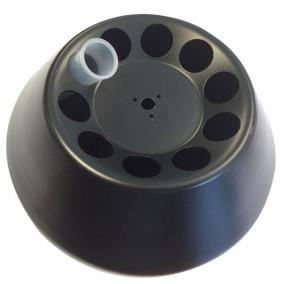

La centrifugeuse : principe, rotors et maintenance
Une centrifugeuse tourne à plusieurs milliers de tours par minute avec des tubes de sang à bord. Bien choisie, bien chargée et bien entretenue, elle est l'un des appareils les plus sûrs du laboratoire ; négligée, elle devient l'un des plus dangereux.
Définition et principe
Une centrifugeuse est un appareil qui imprime une accélération, par un mouvement de rotation, à un mélange non homogène pour en séparer les différentes phases, selon leur différence de densité. Au laboratoire, elle sépare par sédimentation les éléments solides des liquides biologiques, en particulier les éléments figurés du sang (globules rouges, globules blancs, plaquettes). On trouve des centrifugeuses de paillasse, des ultracentrifugeuses, des centrifugeuses à hématocrite et des centrifugeuses sur pied.
Le mot vient de « centrifuger », du latin fugere, « fuir », et de « centre ». La centrifugation sert bien au-delà du laboratoire : essorage du linge ou de la salade, extraction des jus, dessiccation des boues des eaux usées, écrémage du lait, enrichissement de l'uranium en isotope 235. Au laboratoire, elle récupère un précipité (urines, biologie moléculaire) et sépare les éléments figurés du sang.
Elle applique la loi de Newton : un corps de masse \(M\) qui tourne à la vitesse angulaire \(\omega\) à la distance \(R\) de l'axe subit une force centrifuge dirigée vers l'extérieur :
\[ F = M\,\omega^2 R \]Les particules les plus denses se déposent au fond du tube en peu de temps ; les plus légères mettent plus longtemps et se déposent au-dessus. En réalité, un composé à la distance \(r\) de l'axe subit plusieurs forces : la pesanteur \(F_p\) (descendante), la poussée d'Archimède \(F_a\) (ascendante), une force de friction \(F_v\), la force centripète \(F'_c\) et la force centrifuge \(F_c\). La séparation s'opère par l'action de la force centrifuge \(F_c\). Pour un même volume, la pesanteur dépend de la densité mais pas la poussée d'Archimède : la particule flotte si \(F_a > F_p\) et coule si \(F_a < F_p\).



Éléments
- Panneau de contrôle (interrupteur marche-arrêt, minuteur, réglage de la vitesse, de la température sur les modèles réfrigérés, contrôle des vibrations, système de freinage).
- Système de réfrigération (modèles réfrigérés).
- Base, couvercle, boîtier, moteur électrique.
- Rotor. Les modèles récents ont des microprocesseurs, des programmes en mémoire et des moteurs à induction (sans charbons).
Types de rotors
| Rotor | Caractéristiques |
|---|---|
| À angle fixe (angulaire) | D'usage courant. Tubes maintenus à un angle fixe, entre 20 et 45 degrés selon le modèle. Pour sédimenter des particules infracellulaires ; l'angle raccourcit la trajectoire et le temps de sédimentation par rapport aux godets oscillants. |
| À godets oscillants (libres) | Pour des études isopycniques (séparation par densité) et de séparation zonale (par taille), quand une résolution maximale des zones est requise. |
| À tubes verticaux | Tubes parallèles à l'axe de rotation : les bandes se forment parallèlement à l'axe des tubes. Études isopycniques et parfois zonales, quand un temps de centrifugation court est important. Tubes spécialement conçus. |
| À tubes quasi verticaux | Pour la centrifugation en gradient de densité quand certains éléments de l'échantillon ne participent pas au gradient ; faible inclinaison. |
Le fabricant spécifie pour chaque rotor : son type, sa capacité nominale (en litres ou sous-multiples), sa vitesse maximale (tr/min) et sa force centrifuge relative maximale.
Installation
- Alimentation électrique de capacité adaptée.
- Environnement propre, sans poussière, plancher ferme et horizontal.
- Espace libre du côté du condenseur pour les modèles réfrigérés.
- Armoire de rangement pour les accessoires et les rotors.
Entretien et maintenance
- Toujours désinfecter la cuve, la tête, les godets et les joints avant toute intervention sur une centrifugeuse utilisée pour des échantillons biologiques ou infectieux. Ne jamais intervenir sur une centrifugeuse non décontaminée.
- Rotors : enregistrer la date d'achat, le modèle et le numéro de série ; ne les utiliser qu'avec la centrifugeuse prévue ; respecter vitesse maximale et densité des échantillons ; pas de détergents alcalins ; brosses en plastique, jamais métalliques ; laver immédiatement après une projection corrosive, sécher à l'air ; stocker au sec, pas dans la centrifugeuse ; charger et décharger dans une enceinte de sécurité biologique pour le groupe de risque 2 ou plus.
- Ne jamais ouvrir le couvercle d'une centrifugeuse en marche, ni freiner le rotor à la main.
- Tubes : lavage à la main, avec des gants, dans une solution de détergent doux à 1/10 ; verre stérilisé à la vapeur à 121 °C pendant 30 minutes ; stockage au frais, au sec, à l'abri de la lumière ; vérifier le niveau de remplissage et la fermeture des tubes en verre mince.
| Maintenance préventive | Opérations |
|---|---|
| Une fois par mois | Éléments externes sans poussière, compartiment du rotor nettoyé ; connexions et ajustements du rotor en bon état, lubrifiés ; verrouillage et sécurité du couvercle ; joints d'étanchéité. |
| Une fois par an | Cartes électroniques propres et connectées ; test des commandes (vitesse, durée, température, alarmes) ; température vérifiée au thermomètre électronique (modèles réfrigérés) ; minuteur contrôlé : le temps mesuré ne doit pas s'écarter de plus de ± 10 % du temps programmé ; système de freinage. |
Exemple de calcul
Exemple ajouté.
Contrôle annuel du minuteur : on programme 5 minutes et on chronomètre 5 min 24 s, soit 324 s au lieu de 300 s. L'écart vaut \(\frac{324 - 300}{300} = 8\,\%\) : c'est dans la tolérance de ± 10 %. À 5 min 36 s, l'écart serait de 12 % : il faudrait intervenir.
À retenir
\[ F = M\,\omega^2 R \qquad \text{écart du minuteur} = \frac{t_{\text{mesuré}} - t_{\text{programmé}}}{t_{\text{programmé}}} \le \pm 10\,\% \]Rotors : angle fixe (20 à 45°, usage courant), godets oscillants (résolution maximale), verticaux (temps court), quasi verticaux (gradients).
Désinfecter avant toute intervention ; jamais ouvrir en marche ni freiner à la main. Préventif : chaque mois (propreté, couvercle, joints), chaque année (commandes, température, minuteur à ± 10 %, frein).